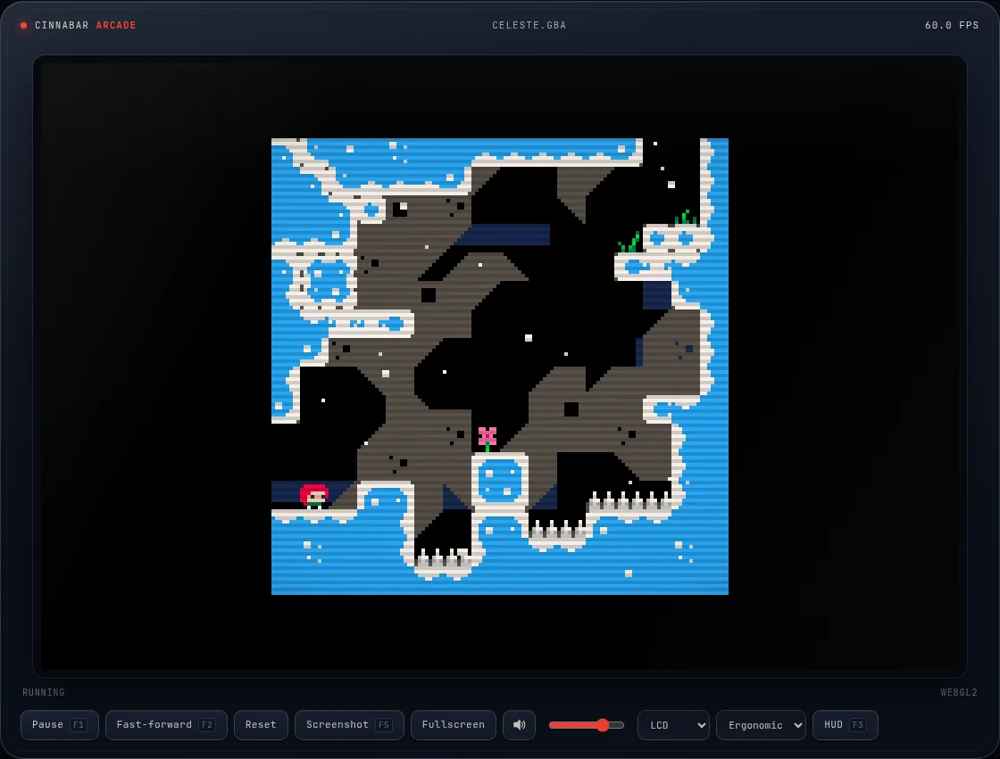
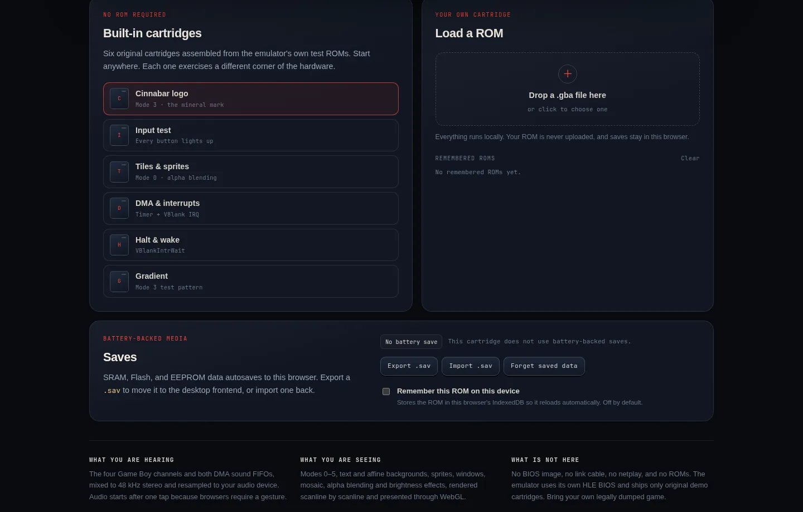
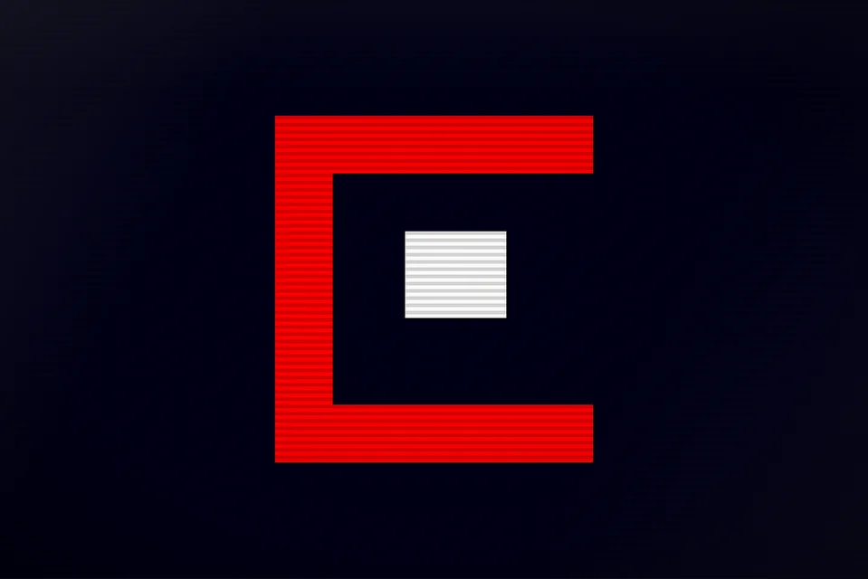
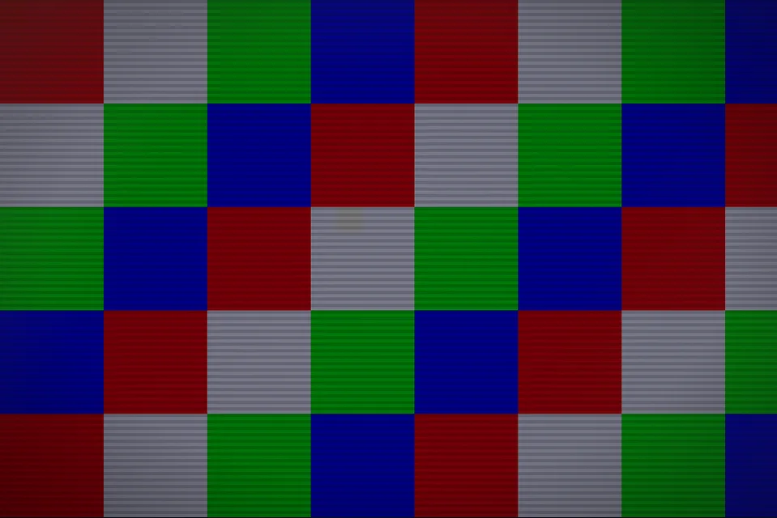
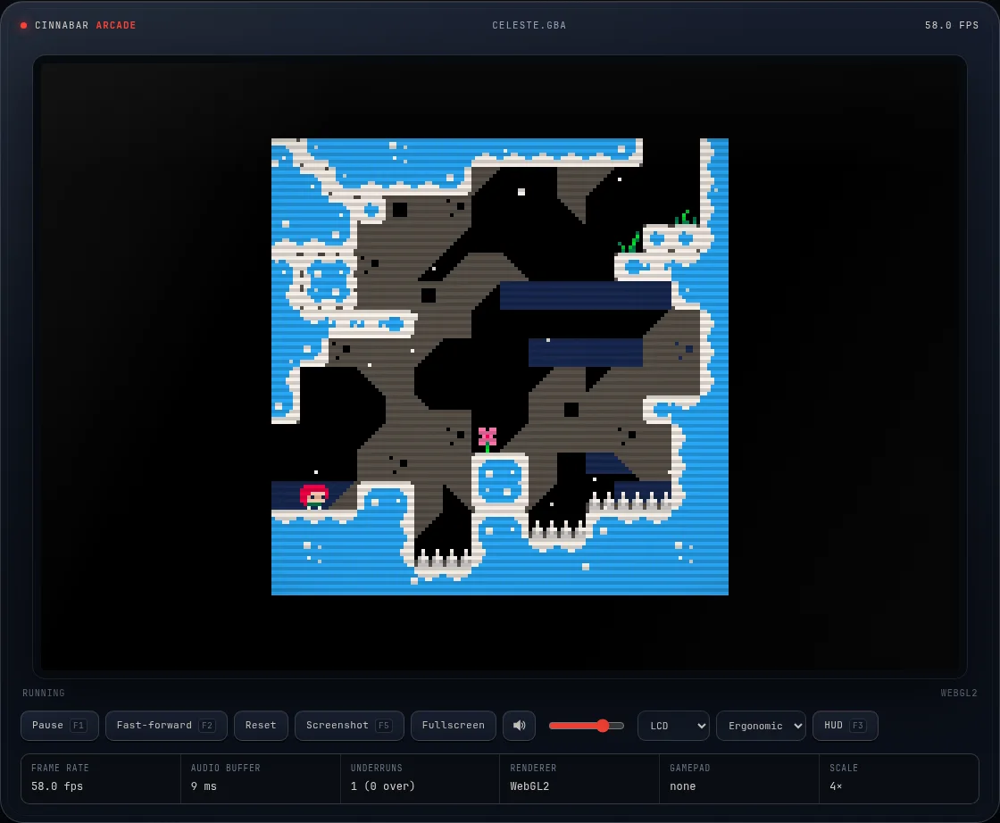
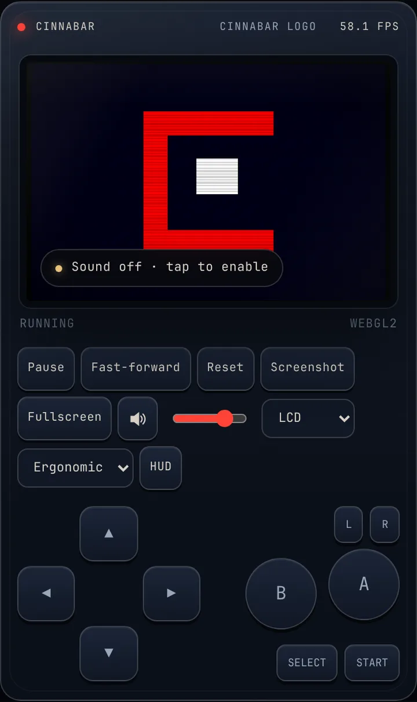

Clean-room emulation · Case study
A console
you can read.
Cinnabar is a Game Boy Advance emulator written in Rust. Its core owns no window, no audio device, and no filesystem, so one machine runs in a desktop app, a terminal debugger, and a browser tab. It boots original demo cartridges without a Nintendo BIOS. It runs the games you own at the console's 59.73 frames per second.
- Role
- Design, core, and frontends
- Stack
- Rust, WebAssembly, vanilla JS
- Surface
- Desktop, terminal, browser
- Status
- v0.5.0, November 2026

The problem
An emulator is easy to run and hard to open.
Most emulators are judged by the games they boot. That is the right test. It also leaves the machine opaque: a binary around a window, a BIOS you are told to find, and a frame you cannot reproduce in a test.
A Game Boy Advance is a stack of chips sharing one bus. Emulator code tends to mirror that shape, then the frontend grows into it. The window, audio device, input, and filesystem become part of the machine. Once they do, the core cannot run in CI, and it cannot run in a tab.
The legal problem is just as blunt. A real GBA starts by running Nintendo's BIOS. Shipping or requiring that image makes a project harder to share. The way out is high-level emulation, but only if the calls are implemented honestly and tested.
The accuracy problem is a trap. Dot-level timing is where emulators disappear. Cinnabar chose compatibility over perfection: implement what games hit, then let open test ROMs find the sharp edges.
The default shape, and this one
Neither column is a criticism of other emulators. It is a description of what the boundary buys.
| Concern | The default shape | Cinnabar |
|---|---|---|
| Where the machine lives | The core grows into the window. |
A headless System with no I/O.
|
| Firmware | A user-supplied BIOS image, or a bundled one. | BIOS calls implemented in Rust. |
| Ways to run | One frontend, usually a window. | Desktop, terminal debugger, browser. |
| Proof | Boot a game and watch. | Test ROMs, smoke checks, a headless benchmark. |
| Sharing | ROMs and firmware complicate distribution. | No commercial ROMs, no BIOS, MIT licensed. |
What it is
One machine, three ways in.
Cinnabar recreates the GBA as a CPU, a bus, and a set of
peripherals. System::run_frame() returns a
240×160 framebuffer and stereo samples. Everything else is a
shell around that call.
Because a frame is exactly 280,896 cycles and the core owns no I/O, the same input produces the same frame. That is what makes headless screenshots, tests, and rewind possible.
The browser arcade is the friendliest shell. It boots six original cartridges, takes a ROM you own, and keeps saves in IndexedDB. Sound runs through an AudioWorklet. Gamepads and touch work. A WebGL2 shader draws the LCD or CRT grid over the frame, with a 2D canvas fallback.
The native app is the same machine with a window, a speaker, and a save file next to the ROM. The debugger is the same machine with breakpoints, memory editing, PPU viewers, save states, and a rewind buffer. None of them owns the emulator.
Desktop
A 240×160 window, keyboard and gamepad input, LCD and CRT shaders, and battery saves next to the ROM.
Debugger
Breakpoints, step and step-frame, a memory editor, tile, palette, and OAM viewers, save states, and rewind.
Browser
Six built-in cartridges, AudioWorklet sound, IndexedDB saves, gamepad and touch controls, and WebGL2 shaders.
The core is the product.
The window is a detail.

The walkthrough
The arcade in sixty seconds.
There is a 3:13 explainer film for the whole machine. There is also a fixed route through the live arcade for anyone who wants the short version: six beats, no improvisation, and something on screen for every claim.

One frame, explained. The machine, the bus, the PPU, the BIOS, and the proof, narrated over real captures. Watch the filmThe 60-second route
-
0:00 to 0:10
Boot the logo cartridge
- Action
- Open the arcade at 1440×900. The logo cartridge is already running.
- On screen
- The red C draws at 60 fps. The status reads RUNNING and WEBGL2.
- Narration
- "This is Cinnabar. A Game Boy Advance, rebuilt in Rust, running in a tab."
-
0:10 to 0:20
Switch to Tiles & sprites
- Action
- Click the Tiles & sprites chip.
- On screen
- The test pattern draws text backgrounds, a sprite, and alpha blending.
- Narration
- "Every built-in cartridge is a test ROM with a picture."
-
0:20 to 0:30
Press every button
- Action
- Open Input test. Press E, S, D, F, J, K, A, L, Enter, and Backspace, then press F3.
- On screen
- Each button lights its shape. The HUD shows frame rate, audio buffer, underruns, renderer, gamepad, and scale.
- Narration
- "The keypad is real input. The HUD is the machine's pulse."
-
0:30 to 0:42
Play Celeste Classic
- Action
- Load the homebrew ROM, press Start, then move and jump.
- On screen
- The game runs at 59.73 fps with sound through an AudioWorklet.
- Narration
- "A real game, not a demo loop. The same core that ran in the test suite."
-
0:42 to 0:52
Pause, fast-forward, screenshot
- Action
- Press F1, then F2, then F5.
- On screen
- The pause badge appears, the frame rate climbs, and a PNG lands in the downloads.
- Narration
- "Pause, fast-forward, screenshot. The controls are the same machine, not a recording."
-
0:52 to 1:00
Export a save
- Action
- Scroll to Saves and export the .sav file.
- On screen
- A standard battery save leaves the browser as a file.
- Narration
- "The browser can hand the save back to the desktop app. Same machine, same bytes."
How it works
Four ideas hold the machine together.
The architecture is small on purpose. There is no plugin system, no scene graph, and no second copy of the hardware.
-
The core is headless.
System::run_frame()owns the loop. It returns a framebuffer and stereo samples. No window, no audio device, no filesystem. That is why the same code can run in a test, a desktop app, and a browser tab. -
The bus is the switchboard.
The CPU never touches hardware directly. It asks the bus for an address, and the bus reads the top byte: 0x02 is work RAM, 0x04 is hardware, 0x08 is the cartridge. Every access goes through it.
-
The PPU draws one scanline at a time.
Each line asks four backgrounds and 128 sprites for a color, then applies windows, alpha, brightness, and mosaic. After 160 visible lines and 68 VBlank lines, the frame is ready.
-
The BIOS is a Rust function table.
A real GBA starts in Nintendo's firmware. Cinnabar catches the SWI instruction and implements the useful calls directly: decompress, fill, divide, wait. No copyrighted firmware ships, and cartridges still boot.
pub fn run_frame(&mut self) -> FrameOutput {
self.bus.ppu.frame_ready = false;
while !self.bus.ppu.frame_ready {
self.step();
}
FrameOutput {
framebuffer: self.bus.ppu.framebuffer.clone(),
audio: self.bus.apu.take_samples(),
}
}
The guided tour, including the memory map and the frame loop, is in docs/ARCHITECTURE.md .
Performance
Fast enough to stop thinking about it.
The headless core is not just testable. It is quick. On a release build, a 300-frame Celeste Classic run finishes at 449.6 frames per second, about 7.5 times the console's 59.73 Hz.
- Headless Celeste
- 449.6frames per second
- Headroom
- 7.5×over real time
- Cycle budget
- 280,896cycles per frame
- Console rate
- 59.73frames per second
- Frame
- 240×160BGR555 pixels
- Mixer
- 48 kHzstereo samples
One release build on the development machine, no display, no
audio device. The browser is paced by
requestAnimationFrame, not this number.
The 7.5× is not a promise for the browser. The arcade is capped at 59.73 Hz, with up to four catch-up frames, so a slow tab drops frames rather than speeding up. The number that matters there is the one in the HUD: 58 to 60 fps, a single-digit audio buffer, and a low underrun count during normal play.

Verification
The test ROMs ask the questions.
An emulator is a pile of claims. Cinnabar checks them with open test suites and a headless boot of every bundled cartridge.
Test coverage
| Area | Suite | Status |
|---|---|---|
| ARM instruction set | gba-tests/arm |
passing |
| Thumb instruction set | gba-tests/thumb |
passing |
| Memory map and mirrors | gba-tests/memory |
passing |
| SRAM, Flash, no backup | gba-tests/save |
passing |
| PPU modes 0 to 5 | gba-tests/ppu + built-ins |
passing |
| BIOS HLE | SWI unit and integration tests | passing |
| Browser arcade | WASM, AudioWorklet, IndexedDB, WebGL | manual |
gba-tests. Passing is a
picture, not a promise.
Verified commercial titles
| Title | Region | Save type | Coverage |
|---|---|---|---|
| The Legend of Zelda: The Minish Cap | Europe (BZMP) | EEPROM 8K | boot, intro, file select, save, reload, gameplay, audio |
| Pokémon FireRed Version | US (BPRE) | Flash 128K | boot, flash-ID, New Game, save, reload, gameplay, audio |
Checked against legally dumped images. Commercial ROMs are not part of the repository. The full matrix is in docs/COMPATIBILITY.md .
Run it yourself
# unit and integration tests
cargo test --workspace
# open test suites, PPU checks, and Celeste
./tools/validate.sh
# boot every bundled cartridge headlessly
./tools/smoke.sh
# manual one-hour emulated soak
./tools/soak.sh /path/to/game.gba 216000Limits
What this does not claim.
A demo is more convincing when it says where the edges are. These are the current ones.
- PPU timing is scanline-based. Dot-level effects and exact HBlank or DMA timing are still approximate.
-
The BIOS is high-level emulation, not a cycle-accurate
firmware. The
biostest ROM is unsupported by design. - Audio DMA refill timing is approximate, high square and noise frequencies alias at 48 kHz, and the exact SOUNDBIAS PWM output stage is not modelled.
- There is no link cable and no netplay yet.
- Commercial compatibility is a work in progress. Two retail titles are verified; an automated compatibility dashboard is not built.
- The browser needs WebGL2 and AudioWorklet for the full arcade. It falls back to a 2D canvas and silent playback when they are missing.
- No commercial ROMs and no BIOS are bundled. You supply a legally dumped game.

What is next
The next version should be harder to impress.
The interaction is proven. The remaining work is accuracy, reach, and more evidence.
-
Dot-level PPU effects
Add the timing that games use for raster tricks, without giving up the scanline fast path.
-
Exact SOUNDBIAS PWM
Model the output stage, not just the amplitude resolution, and publish a mixing test beside it.
-
A compatibility dashboard
Run the same smoke and soak scripts across a library and publish pass, fail, and known issues.
-
One-hour commercial soak
Turn the manual release check into a repeatable gate with a saved frame and a log.
-
Link cable and netplay
The moonshot. Two emulators, one cable, no desync. It stays after v1.
-
Real BIOS support
Optional and user-supplied. The HLE path stays the default, and the firmware never enters the repo.
The machine is running
Try it in the tab.
Boot an original cartridge, drop in a ROM you own, or read the source and build the desktop app. No install, no BIOS, no uploads.